"Grand Old Man of Philippine Art"
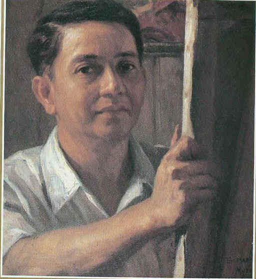
Self Portrait
Fernando Amorsolo is a famous painter and the first ever Filipino National Artist.
Amorsolo was born in Paco, Manila on May 30, 1892.
At the age of 13, as a budding painter, he helped augment his family’s meager income by drawing postcards for a bookstore.
His first recorded win at a competition was at the Bazar Escolta organized by the Asociacion Internacional de Artistas in 1908. He won second prize for Leyendo Periodico. He made illustrations for various Philippine publications including Severino Reyes’ first novel in Tagalog, Parusa ng Diyos (God’s Punishment) and Iñigo Ed. Regalado’s Madaling Araw (Dawn). To earn more money, he also provided illustrations for the religious Pasion books. In 1914, he graduated with medals from the University of the Philippines.
Awards and Achivements
gold medal from the Unesco National Commission (1959)
the Rizal Pro Patria Award (1961)
Honorary Doctorate in the Humanities from the Far Eastern University (1961)
Diploma of Merit from the University of the Philippines (1963)
Patnubay ng Sining at Kalinangan Award from the City of Manila (1963)
the Republic CulturalHeritage Award (1963)
and the very first National Artist Award four days after he passed away on April 24, 1972 at the age of 79.
Timeline
Fernando Amorsolo was born May 30, 1892, in the Paco district of Manila.
At the age of 13 he was apprenticed to the noted Philippine artist Fabian de la Rosa, his mother's first cousin.
In 1909 Amorsolo enrolled at the Liceo de Manila and then attended the fine-arts school at the University of the Philippines, graduating in 1914.
After working three years as a commercial artist and part-time instructor at the university, he studied at the Escuela de San Fernando in Madrid.
For seven months he sketched at the museums and on the streets of Madrid, experimenting with the use of light and color. That winter he went to New York and discovered the works of the postwar impressionists and cubists, who became the major influence on his works. On his return to Manila, he set up his own studio.
During the 1920s and 1930s Amorsolo's output of paintings was prodigious. In 1939 his oil Afternoon Meal of the Workers won first prize at the New York World's Fair
During World War II Amorsolo continued to paint.
His wartime paintings were exhibited at the Malacanang presidential palace in 1948
After the war Amorsolo served as director of the college of fine arts of the University of the Philippines, retiring in 1950.
Amorsolo, who died in 1972, is said to have painted more than 10,000 pieces. He continued to paint even in his late 70s, despite arthritis in his hands. Even his late works feature the classic Amorsolo tropical sunlight. He said he hated "sad and gloomy" paintings, and he executed only one painting in which rain appears.
Paintings
Fernando Amorsolo became popular because of his illuminated landscapes and his historical paintings on which you can see the real reflection of the Filipino soul. Here are some of Fernando Amorsolo's work:
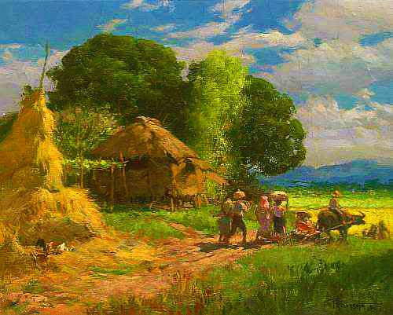
Village Scene, 1947
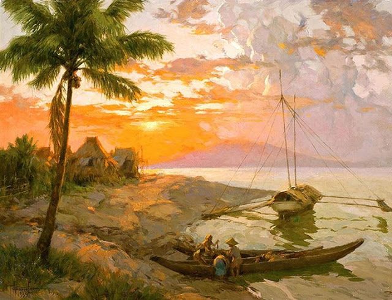
View of Bataan from Manila Bay
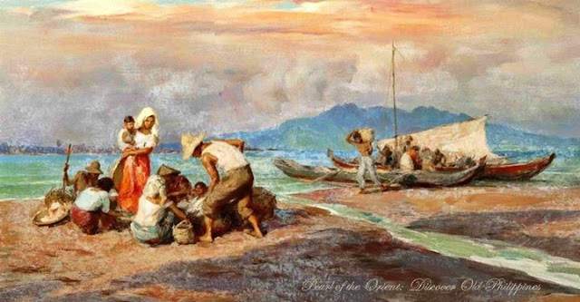
Unloading the Day's Catch
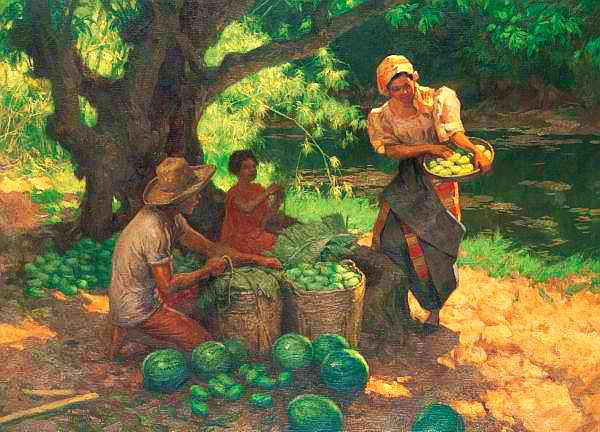
Under the Mango Tree
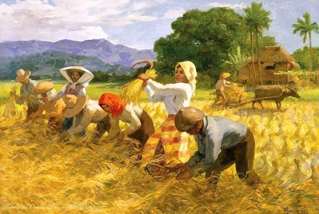
The Harvesters
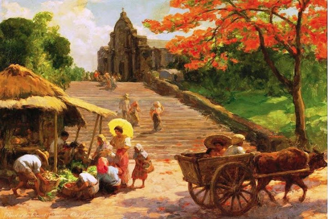
Sunday Morning in the Poblacion
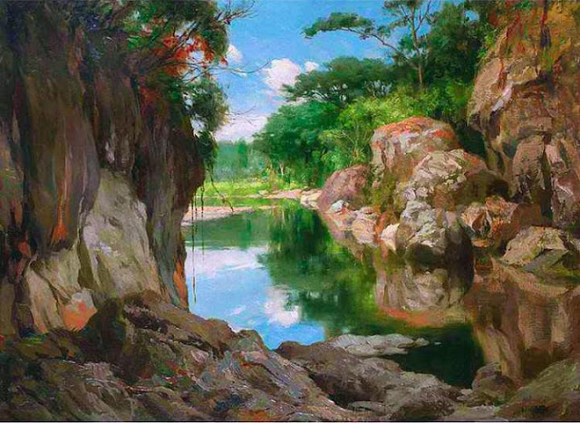
Sibul River, Zamboanga Del Sur
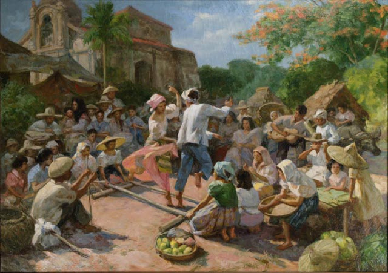
Tinikling in Barrio, 1951
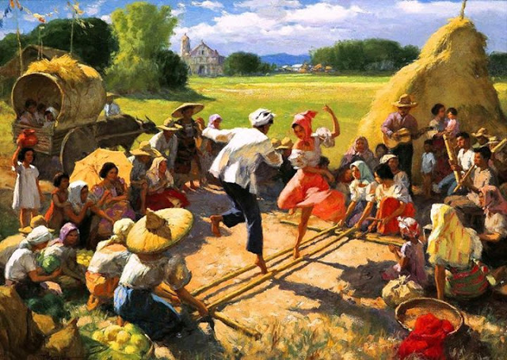
The Tinikling
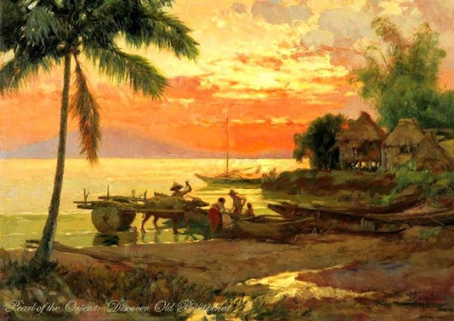
Seascape
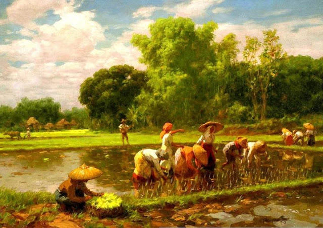
Rice Planting (1922)
His "Rice Planting" (1922) was a staple of tourist brochures
It's visual weight is light because the colors used were mostly pastle in nature.
No dark colors were used to produce a feeling of calm and peace.
The particular genre that was used is "Realism".
His "Rice Planting" (1922), which appeared on posters and tourist brochures, became one of the most popular images of the Commonwealth of the Philippines.
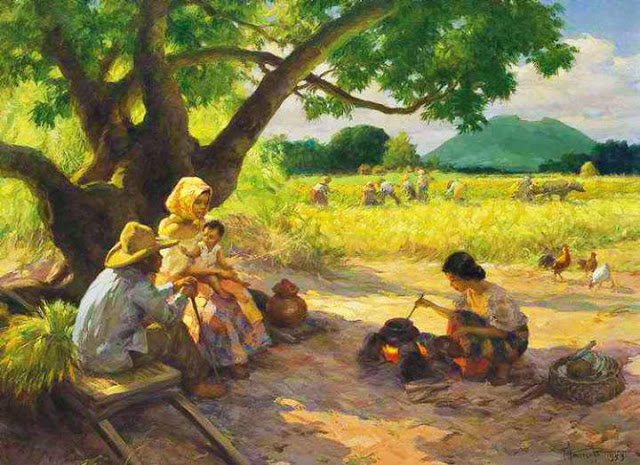
Noontime Meal
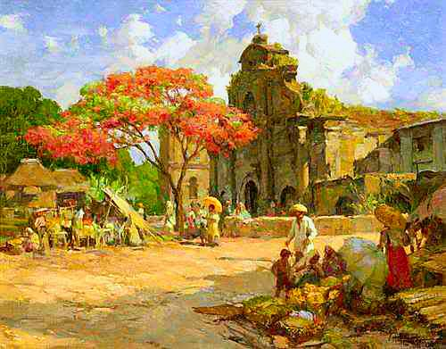
Marketplace Before a Church
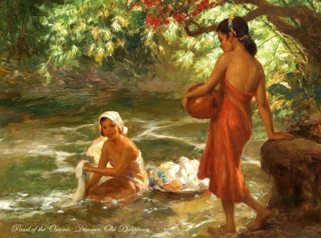
Girl Washing In The River
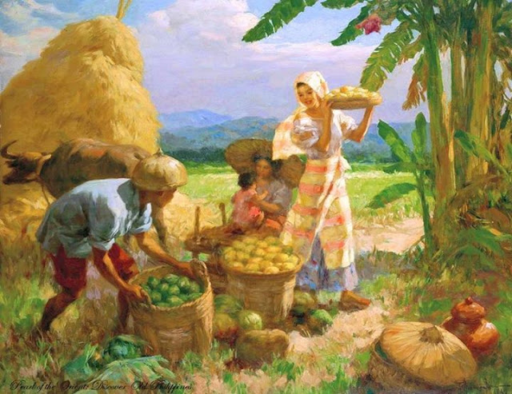
Family Gathering Fruit
On November 30, 2009, the Family Gathering Fruit sold for USD 77,257 at Christie's.
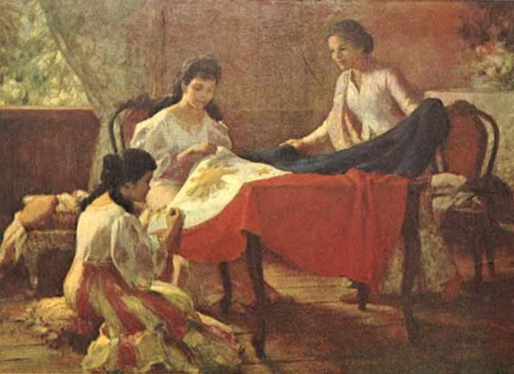
Confeccion De La Standarte Nacional (The Making of the Philippine Flag)
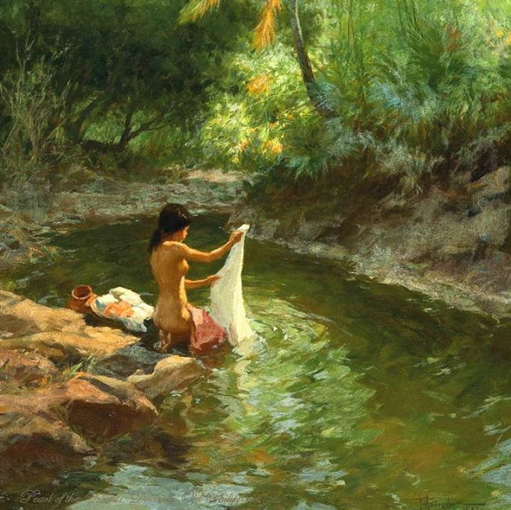
Lavandera
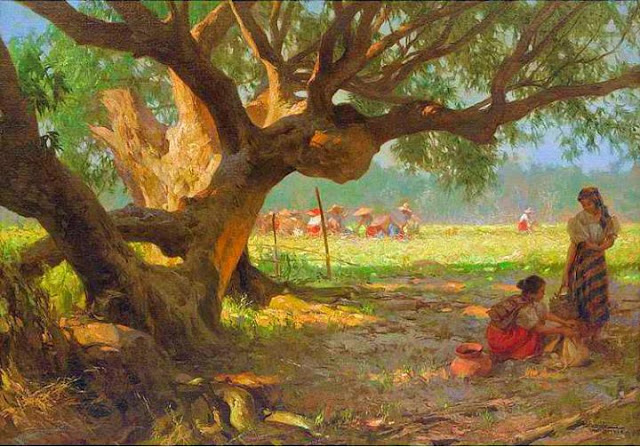
Workers In The Field
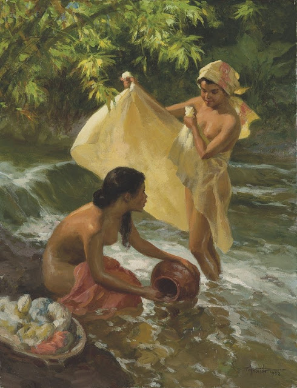
Lavandera 2
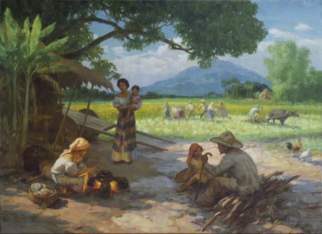
Afternoon meal of the rice workers, 1951, oil on canvas.
Won first prize at the New York World's Fair.
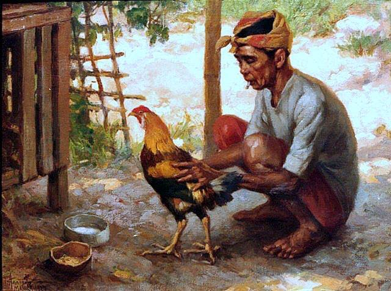
Man with a cockerel, oil on board, 1938
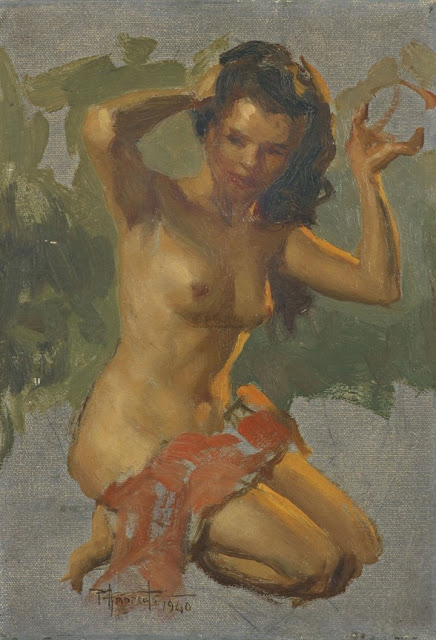
Nude Girl, 1940
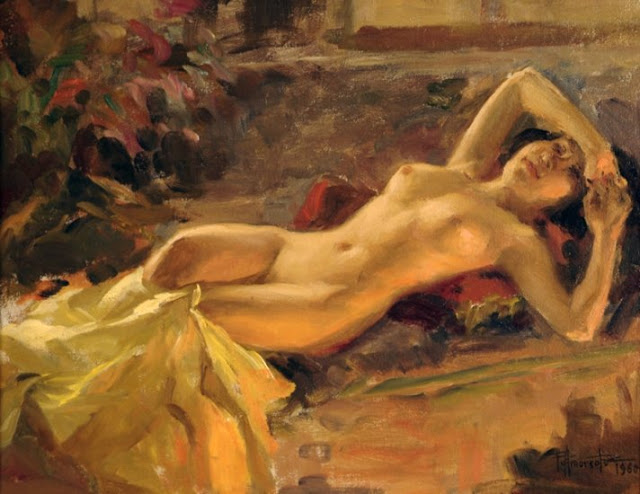
Nude Girl, 1960
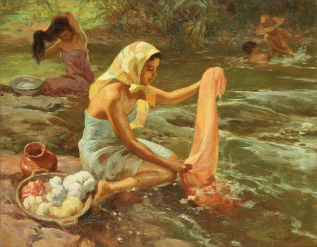
Washing scene, 1953
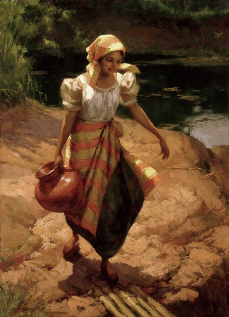
Water carrier, oil on Board, 1937
Trivia
The Artist behind the label
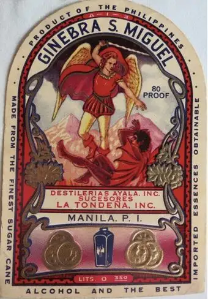
Ginebra San Miguel Bottle Cover Art
The Ginebra San Miguel label that we're familiar with today, featuring St. Michael the Archangel triumphantly battling the vanquished demon, was created in 1917.The artist behind the image was Fernando Amorsolo